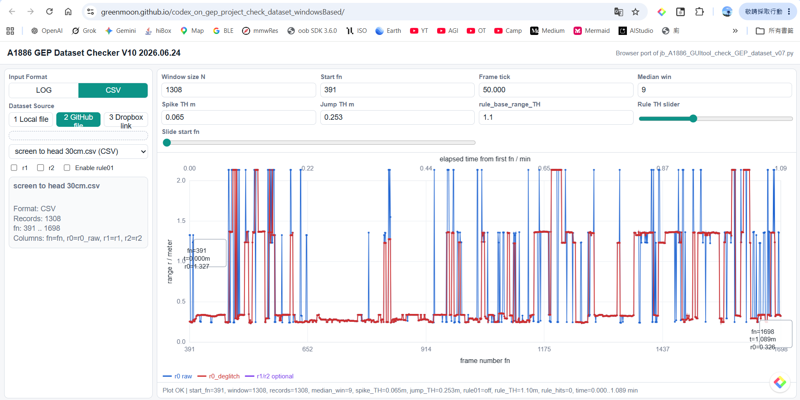
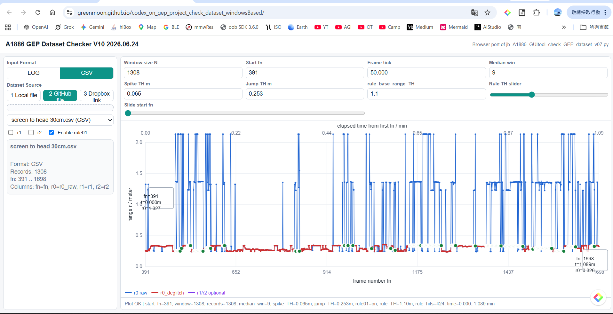
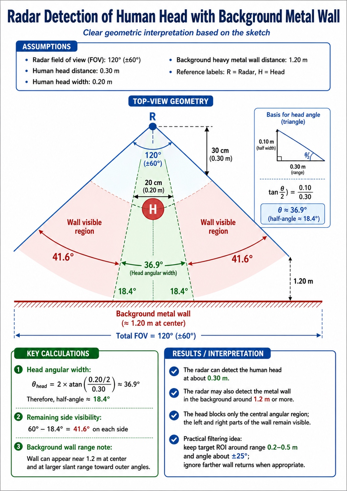

檔案名稱： jb_A1886_screentohead30cm_deglitch_rule01_report_v07_TC.md
測試資料： screen to head 30cm.csv
比較項目： run deglitch vs run deglitch + rule01
公司： Joybien Technologies
版本： v07 TC
本報告依據 A1886 GEP Dataset Checker V10 畫面，針對 screen to head 30cm.csv 進行兩種處理方式比較：
目的為確認：
deglitch 是否能降低 r0_raw 的短暫尖峰。rule01 開啟後，是否可進一步標示可疑區段與統計 rule hit。| 項目 | 設定值 |
|---|---|
| Input format | CSV |
| 檔案 | screen to head 30cm.csv |
| Records | 1308 |
| fn 範圍 | 391 .. 1698 |
| Window size N | 1308 |
| Start fn | 391 |
| Frame tick | 50.000 ms/frame |
| Median win | 9 |
| Spike TH m | 0.065 |
| Jump TH m | 0.253 |
| rule_base_range_TH | 1.1 m |
說明：此圖僅執行 deglitch，rule01 未開啟。狀態列顯示：
rule01=off, rule_hits=0
圖 1．run deglitch 畫面。
紅色 r0_deglitch 已可降低部分藍色 r0_raw 尖峰影響，但仍可看到多個高值跳動區段。
說明：此圖啟用 rule01，綠色點為 rule hit 標示。狀態列顯示：
rule01=on, rule_hits=424
圖 2．run rule01 畫面。
rule01 開啟後，可在原本 deglitch 的基礎上，額外標示與統計可疑點。
rule01 開啟前後差異。deglitch 時，紅色 r0_deglitch 已可降低部分 r0_raw 尖峰影響。rule01 後，系統額外標示規則命中點；本次畫面顯示 rule_hits = 424。rule01 可作為第二層檢查，用於標示與統計可疑區段，利於後續條件調整。| 比較項目 | run deglitch | run rule01 |
|---|---|---|
| Enable rule01 | 關閉 | 開啟 |
| rule01 狀態 | rule01=off |
rule01=on |
| rule_hits | 0 | 424 |
| 額外標記 | 無綠色 rule hit 標記 | 有綠色 rule hit 標記 |
| 用途 | 觀察基本去毛刺效果 | 在去毛刺後再加入 rule01 規則檢查 |
下圖提供幾何與反射強度的概念說明，用來解釋為何在某些量測曲線上，系統可能同時或交替報告兩個可能的 range 值。

圖 3．人頭與背景金屬牆的幾何示意圖。
此圖用於說明為何較近的人頭與較遠的金屬牆都可能形成可見回波。
當前方有人頭、後方又有大型金屬牆時，雷達在視場角（FOV）內可能同時接收到兩類回波：
幾何上，人頭只遮住中央部分角度；左右兩側仍有一部分背景牆面保持可見，因此背景牆回波不一定會完全消失。
因此在曲線或候選 range 輸出中，就可能出現兩個可能的距離值：
若人頭 RCS 較小，而背景金屬牆 RCS 較大，則即使牆面距離更遠，其回波仍可能相當強，甚至在部分 frame 中比人頭回波更容易被選成 candidate peak。
deglitch 可先處理短暫尖峰。rule01 可作為第二層條件，用來進一步標示與統計可疑區段。這些方法可降低背景金屬牆回波被誤選為主要距離值的機率。
依據本次 screen to head 30cm.csv 的 V10 畫面比較，deglitch 可先降低 r0_raw 的部分尖峰；在此基礎上再開啟 rule01，可進一步標示與統計可疑點。
本次 rule01 觸發：
rule_hits = 424因此，rule01 適合用來分析可疑點分布，作為後續 rule_base_range_TH 或其他規則條件調整的依據。
run deglitch。run rule01。rule_hits 數量與命中位置，微調 rule_base_range_TH 或加入更細的條件分層。建議 repo 內放置：
reports/
jb_A1886_screentohead30cm_deglitch_rule01_report_v07_TC.md
jb_A1886_screentohead30cm_deglitch_rule01_report_v07_TC_assets/
run_deglitch_rule01_off.png
run_rule01_on.png
radar_head_wall_geometry.jpegJoybien Technologies
jb_A1886_screentohead30cm_deglitch_rule01_report_v07_TC.md